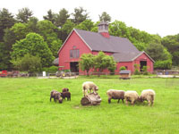
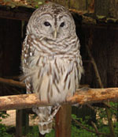
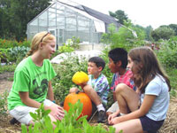
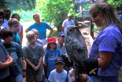
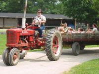
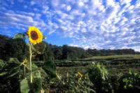

| Things to See | Daily Events | Bird Watching |
Animal Barns
Woolly sheep, spunky goats, chickens, pigs, cows, mules, and our pony greet you in our rustic animal barns, where our livestock operation takes place. Our farmers do chores in the late afternoon and are happy to answer questions for visitors. (For their safety and yours, please do not feed the animals).
Native Wildlife
Visit our Bird Hill and Drumlin Underground exhibits for the rare chance to see New England's most popular wild animals up close, including our skunk, rabbit, owls, hawks, deer, and fox. These animals make Drumlin Farm their home because they have been injured or disabled and cannot survive in the wild.
The Learning Garden
Ever climbed inside a tent of beans? Tasted fresh mint off the stem? Get your hands dirty in our learning garden and find out how much fun vegetables can be! The garden is at its best during the late spring, summer, and fall months, and you can also purchase our own produce at the farm stand to take home with you.
Discover Drumlin Activities
Join our naturalists on the farm for drop-in discovery activities to learn more about the nature of Massachusetts. Discover Drumlin activities are free with admission to the sanctuary and run at 10:00 am, 11:30 am, and 2:30 pm daily from April 1 – November 30 and at 10:00 am, 11:00 am, and 2:30 pm on weekends from December 1 – March 31. Activities and their locations are listed daily in the bulletin near the admissions window.
Hayrides
Hop onboard for a good old-fashioned hayride around the farm. In the spring, summer, and fall seasons, hayrides depart from the Red Barn, weather permitting, every 15 minutes from 10:00 am – 12:30 pm and 1:30 pm – 3:45 pm. Age 13 – adult $2, 2 – 12 $1, under 2 free.
Hiking Trails
Stroll along our vegetable fields, amble through the woods, or hike to one of the highest points in the greater Boston area on our 3 miles of trails. The view from the top of our drumlin offers a glimpse of both Mt. Modadnock and Mt. Wachusett on a clear day.
December Monthly Highlights
With winter upon us, the nature seems to have fallen asleep. But a closer look reveals small wonders in the ways that plants and animals survive the cold months. Mammals seek shelter in dens and cavities, birds forage in interspecies flocks, and our sheep get woollier by the day. Visit Drumlin Farm this December to witness the wonders of winter survival.
January Monthly Highlights
With winter upon us, nature seems to have fallen asleep, but a closer look reveals small wonders in the ways plants and animals survive the cold months. Mammals seek shelter in dens and cavities, birds forage in mixed flocks, and our sheep get woollier by the day. Visit Drumlin Farm this January to witness the wonders of winter survival.
February Monthly Highlights
Although snow still blankets the ground, sap is moving in the maples, a sign of buds and leaves to follow! As the days warm but the nights remain chilly, our maple trees produce a sugary sap that we harvest, boil, and package right here at Drumlin Farm as our own delicious maple syrup. Come explore the sanctuary in February to see the signs of this age-old tradition—and perhaps taste fresh maple syrup. Toward the end of the month, you may see the first goat kids of the season as well!